DTI <- DTI %>%
drop_na() %>%
filter(visit == 1 & case == 1)
cca_data <- DTI$cca %>%
t() %>%
as_tibble() %>%
janitor::clean_names() %>%
mutate(
tract = 1:93
)Dia-03
Modelagem de Dados Funcionais usando Componentes Principais Funcionais
Tópicos de hoje:
FPCA para dados altamente frequentes (dados de imagens de tensor de difusão)
- Estimação das funções média e covariância (suavização de cada curva / média ponto a ponto)
- Decomposição espectral das funções de covariância (escalonamento!)
FPCA para dados ruidosos e esparsos (dados de contagem de células CD4)
Visualização usando refund.shiny (dados de clima canadense)
1 FPCA para dados de alta frequentes com ruído.
- Modelo FPCA
\[ Y_i(t) = \mu(t) + \sum_{k=1}^{n_{pc}} \xi_{ik} \phi_k(t) + \epsilon_i(t) \]
Aqui vou usar o conjunto de dados de imagens de tensor de difusão (DTI) para ilustrar a análise de componentes principais funcionais para dados altamente frequentes com pequenos ruídos (sem dados faltantes).
Lembrando que, como discutido no Dia 1, iremos nos concentrar na Anisotropia Fracional (FA) ao longo do trato do corpo caloso (CCA) coletada de pacientes com esclerose múltipla (MS) sem nenhum valor faltante.
gráfico da média dos dados
cca_data %>%
pivot_longer(cols = starts_with("x")) %>%
group_by(tract) %>%
mutate(
avg = mean(value)
) %>%
ggplot(aes(tract, value, group = name))+
geom_line(color = "gray")+
geom_line(aes(tract,avg), color = "red",linewidth = 2, linetype = 2)+
theme(legend.position = "none")+
ylab("Anisotropia fracional (AF)")+
ggtitle("Imagem de Tensor de Difusão:CCA")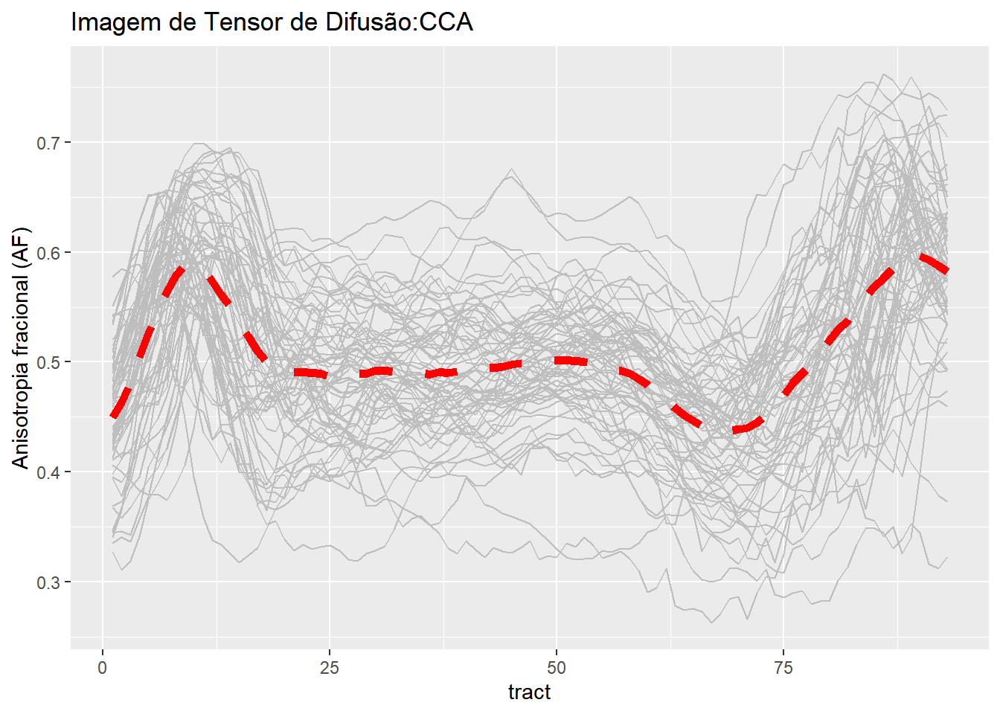
1.1 Estimação das funções média
Suavize cada curva e calcule a média ponto a ponto.
library(mgcv)
smooth.curves <- array(0, dim(DTI$cca))
n <- nrow(DTI$cca)
tract <- 1:93
for(j in 1:n){
# j = 1
fit <- gam(DTI$cca[j,] ~ s(tract, k = 10, bs = 'cr'), method = "REML")
# plot(tract, DTI.baseline$cca[j,])
# lines(tract, fit$fitted)
smooth.curves[j,] <- fit$fitted
}
smooth.curves %>%
t() %>%
as_tibble() %>%
janitor::clean_names() %>%
mutate(
tract = 1:93
) %>%
pivot_longer(cols = starts_with("V")) %>%
group_by(tract) %>%
ggplot(aes(tract, value, group = name, color = name))+
geom_line()+
theme(legend.position = "none")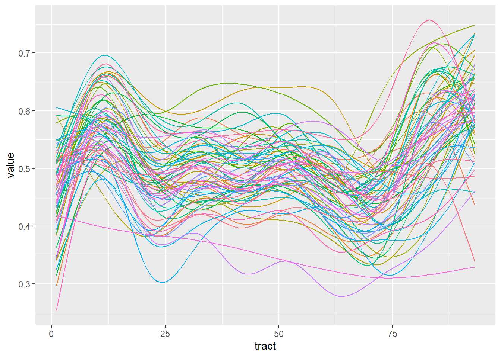
smooth.curves %>%
t() %>%
as_tibble() %>%
janitor::clean_names() %>%
mutate(
tract = 1:93
) %>%
pivot_longer(cols = starts_with("V")) %>%
group_by(tract) %>%
mutate(
avg = mean(value)
) %>%
ggplot(aes(tract, value, group = name))+
geom_line(color = "gray")+
geom_line(aes(tract,avg), color = "red",linewidth = 2, linetype = 2)+
theme(legend.position = "none")+
ylab("Anisotropia Fracional (FA)")+
ggtitle("Imagem de Tensor de Difusão:CCA")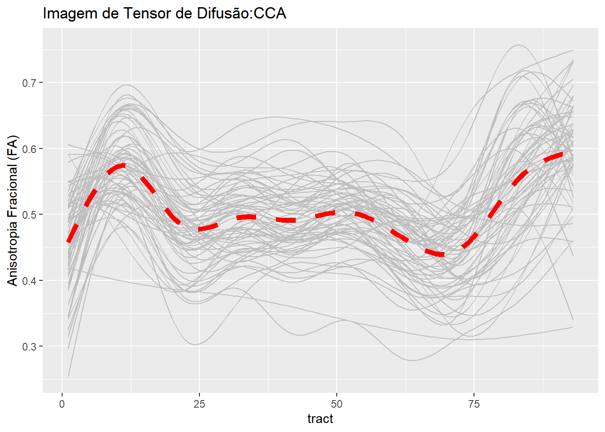
Observe que ambas as abordagens fornecem exatamente a mesma função média!
1.2 Estimação da função de covariância
Suavize cada curva e calcule a covariância amostral.
library(RColorBrewer)
smooth.cov <- cov(smooth.curves)
smooth.cov %>%
as_tibble() %>%
mutate(
tract = 1:93
) %>%
pivot_longer(cols = starts_with("V")) %>%
ggplot(aes(tract, name, fill = value)) +
geom_tile()+
scale_fill_gradientn(colors = brewer.pal(11, "RdBu")) +
theme(axis.text.y=element_blank(),
axis.ticks.y=element_blank())+
labs(y=tract,title = "Covariância suavizada de Análise Fatorial (AF).")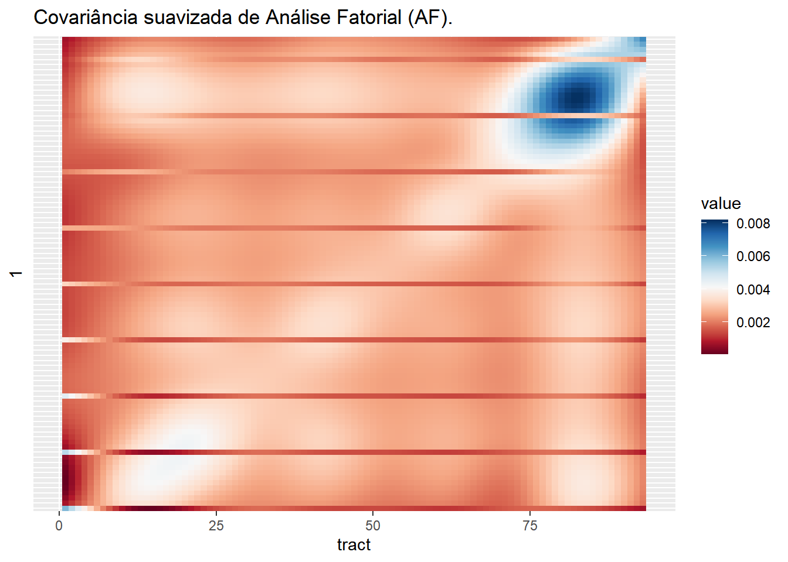
1.3 A decomposição espectral da matriz de covariância estimada.
A partir da decomposição espectral da função de covariância estimada, podemos obter as eigenfunções e os autovalores estimados.
svd.result0 <- eigen(smooth.cov, symmetric = TRUE)
# names(svd.result0)
evectors <- svd.result0$vectors[,svd.result0$values > 0]
evalues <- svd.result0$values[svd.result0$values > 0]
head(colSums(evectors^2)) # returns unitary vectors [1] 1 1 1 1 1 1#Como as eigenfunções retornam vetores unitários, precisamos escalá-los por sqrt(93) (raiz quadrada de 93).
efns0 <- evectors*sqrt(93)
evals0 <- evalues/93
pve <- cumsum(evals0)/sum(evals0)
npc <- sum(pve < 0.95) + 1
# Componentes eigen estimados truncados.
efns <- efns0[,1:npc]
evals <- evals0[1:npc]O gráfico de “scree” está apresentado abaixo:
pve[1:20] %>% # existem 48 componentes / só estou usando as 20 primeiras
t() %>%
as_tibble() %>%
pivot_longer(cols = starts_with("V")) %>%
mutate(
n_pcs = 1:20
) %>%
ggplot(aes(n_pcs,value))+
geom_line()+
geom_point()+
geom_hline(yintercept = 0.95, color = "red", linetype = 2)+
labs(x= "número de CPs", y="% de variação explicada", title = "Scree plot")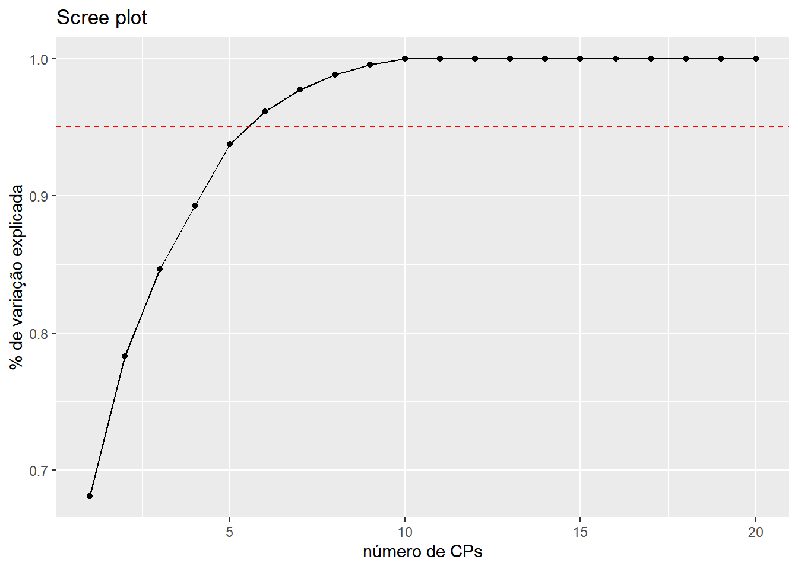
Com base no gráfico sabemos que os primeiros 5 componentes principais explicam mais de 95% das variabilidades nos dados.
efns[,1:5] %>%
as_tibble() %>%
mutate(
tract = 1:93
) %>%
pivot_longer(cols = starts_with("V")) %>%
group_by(tract) %>%
ggplot(aes(tract,value,group = name,color = name))+
geom_line()+
labs(y="autofunção", title = "5 primeiras autofunções")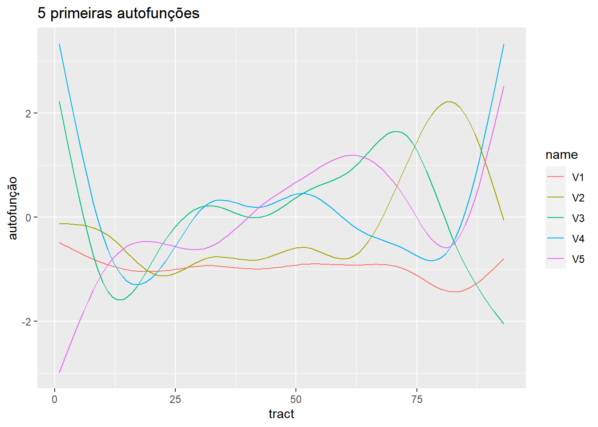
Podemos também visualizar o efeito de cada componente principal traçando a função \(\mu(t) \pm 2\sqrt{\lambda_k}\phi_k(t)\).
k.pc <- 1
effect <- efns[, k.pc]*2*sqrt(evals[k.pc])
mean.hat <- colMeans(smooth.curves)
mat <- cbind(mean.hat - effect, mean.hat + effect)
efns[, k.pc] %>%
as_tibble() %>%
mutate(
tract = 1:93
) %>%
pivot_longer(cols = starts_with("V")) %>%
group_by(tract) %>%
ggplot(aes(tract,value))+
geom_line()+ggtitle("fPC1")+
ylim(-2,2)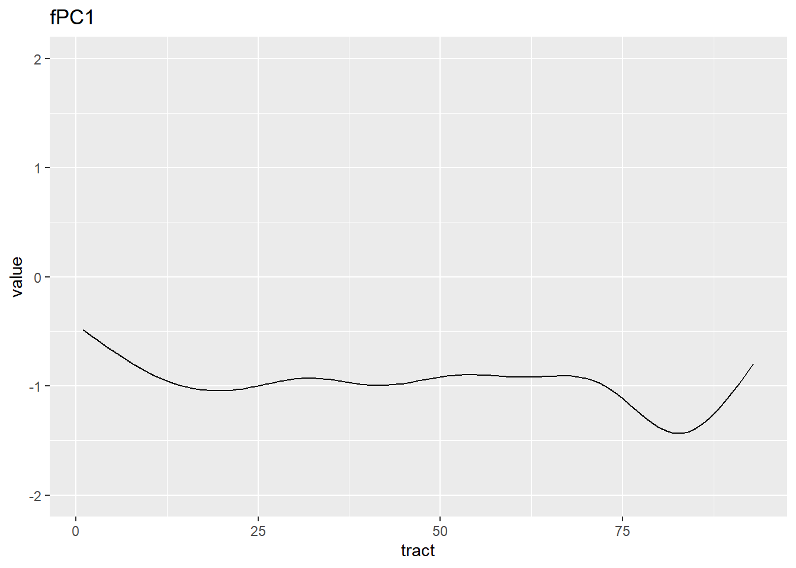
mat %>%
as_tibble() %>%
cbind(pc_1 = mean.hat, tract = 1:93) %>%
pivot_longer(cols = 1:3) %>%
group_by(tract) %>%
ggplot(aes(tract, value, group = name, color = name))+
geom_line() +
ggtitle(glue::glue("fPC",k.pc, " (",round(pve[k.pc]*100),"%)"))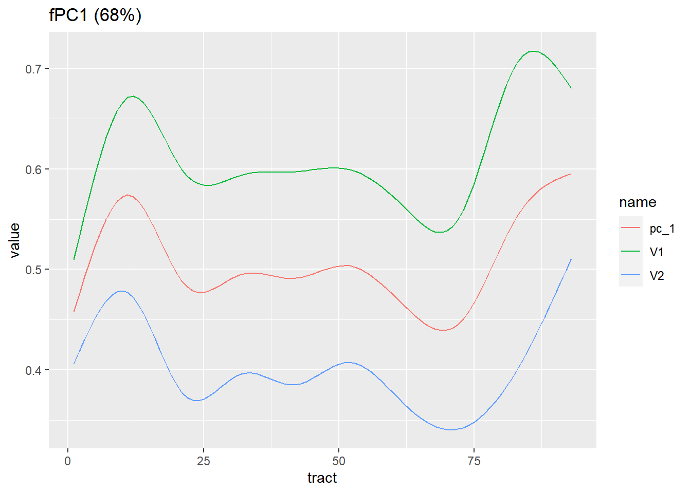
(Atividade em grupo) O que descobrimos a partir dos resultados da fPCA? Quanta variabilidade dos dados foi explicada pela primeira fPC? Que características das curvas a primeira fPC explica? Tente fazer os gráficos para a segunda e terceira fPCs e seus efeitos em relação à média geral.
k.pc <- 2
effect <- efns[, k.pc]*2*sqrt(evals[k.pc])
mean.hat <- colMeans(smooth.curves)
mat <- cbind(mean.hat - effect, mean.hat + effect)
efns[, k.pc] %>%
as_tibble() %>%
mutate(
tract = 1:93
) %>%
pivot_longer(cols = starts_with("V")) %>%
group_by(tract) %>%
ggplot(aes(tract,value))+
geom_line()+ggtitle(glue::glue("fPC",k.pc,))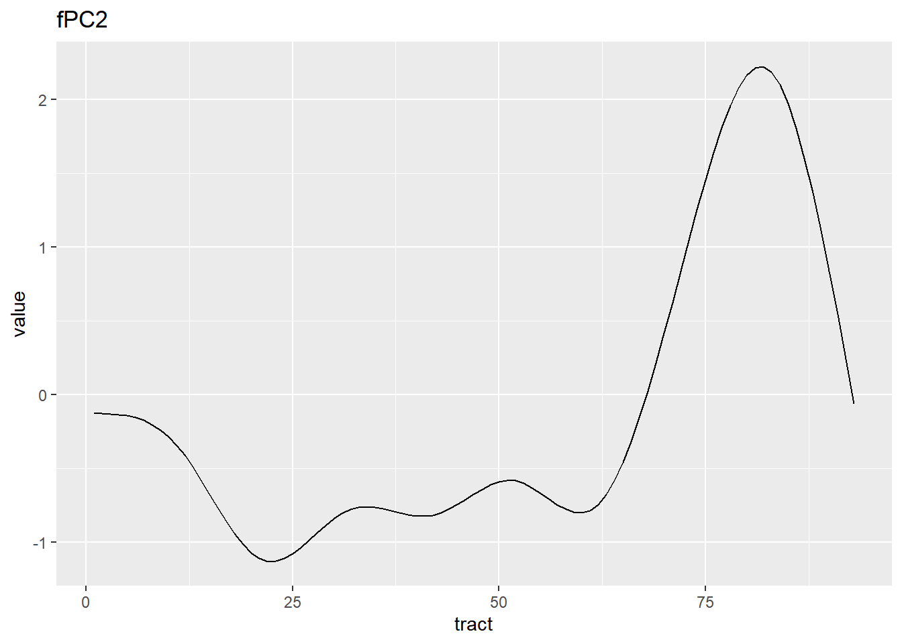
mat %>%
as_tibble() %>%
cbind(pc_1 = mean.hat, tract = 1:93) %>%
pivot_longer(cols = 1:3) %>%
group_by(tract) %>%
ggplot(aes(tract, value, group = name, color = name))+
geom_line() +
ggtitle(glue::glue("fPC",k.pc, " (",round(pve[k.pc]*100),"%)"))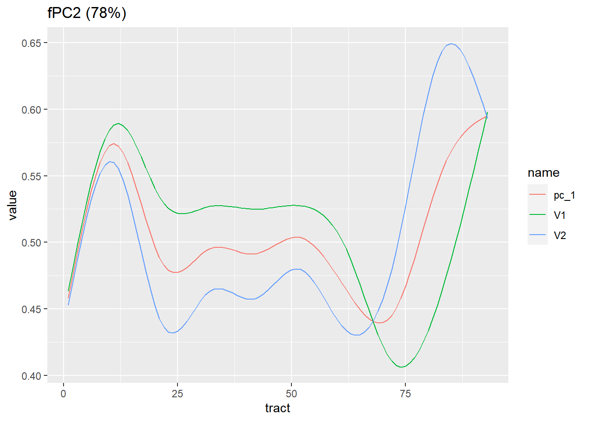
#################################
# Pc3
k.pc <- 3
effect <- efns[, k.pc]*2*sqrt(evals[k.pc])
mean.hat <- colMeans(smooth.curves)
mat <- cbind(mean.hat - effect, mean.hat + effect)
efns[, k.pc] %>%
as_tibble() %>%
mutate(
tract = 1:93
) %>%
pivot_longer(cols = starts_with("V")) %>%
group_by(tract) %>%
ggplot(aes(tract,value))+
geom_line()+ggtitle(glue::glue("fPC",k.pc,))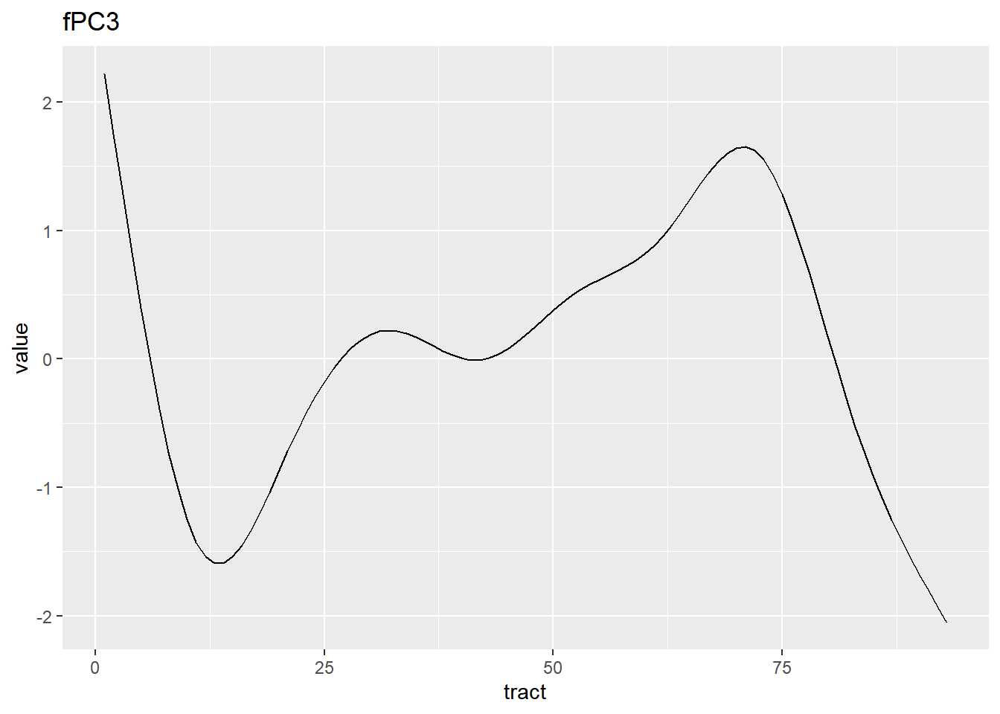
mat %>%
as_tibble() %>%
cbind(pc_1 = mean.hat, tract = 1:93) %>%
pivot_longer(cols = 1:3) %>%
group_by(tract) %>%
ggplot(aes(tract, value, group = name, color = name))+
geom_line() +
ggtitle(glue::glue("fPC",k.pc, " (",round(pve[k.pc]*100),"%)"))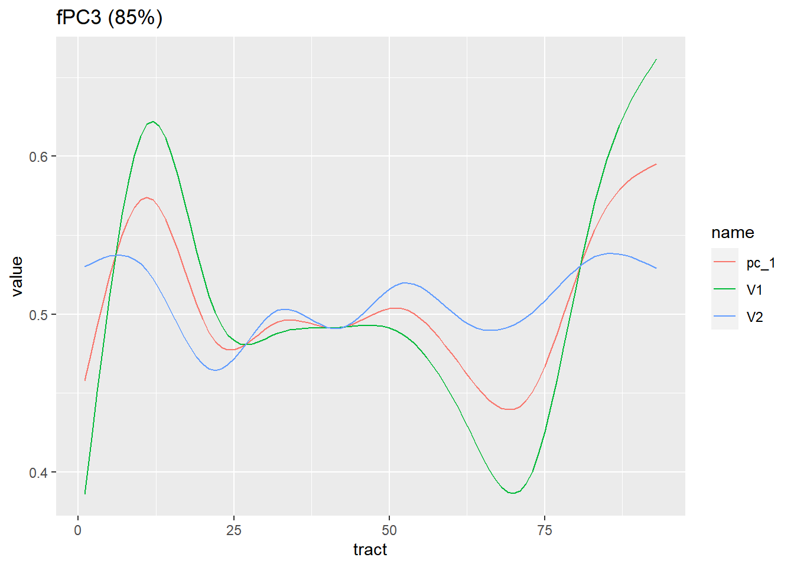
1.4 Estimativa de escores e curvas ajustadas.
Os escores estimados podem ser obtidos calculando \(\hat{\xi}_{ik} = \int_{T} \hat{\phi}^k(t) \{Y_i(t) - \hat{\mu}(t)\} dt\).
E as curvas ajustadas são dadas por
\[ \hat{Y}_i(t) = \hat{\mu}(t) + \sum_{k=1}^{npc} \hat{\xi}_{ik} \hat{\phi}_k(t). \]
demeaned <- DTI$cca - t(matrix(rep(mean.hat, n),
nrow=length(mean.hat)))
scores <- matrix(NA, nrow=n, ncol=npc)
fitted <- array(NA, dim(DTI$cca))
for(i in 1:n){
scores[i,] <- colMeans(matrix(rep(demeaned[i,], npc), nrow=93) * efns)
fitted[i,] <- mean.hat + scores[i,]%*%t(efns)
}rbind( DTI$cca[1:3,], fitted[1:3,])%>%
t() %>%
as_tibble() %>%
mutate(
tract = 1:93
) %>%
pivot_longer(cols = contains("2"), values_to = "c_value") %>%
pivot_longer(cols = starts_with("V"), values_to = "values_smoo", names_to = "name_smoo") %>%
group_by(tract) %>%
ggplot(aes(tract,c_value, group = name, color=name))+
geom_point()+
geom_line(aes(tract,values_smoo,group = name_smoo, color = name_smoo), linewidth = 1.5)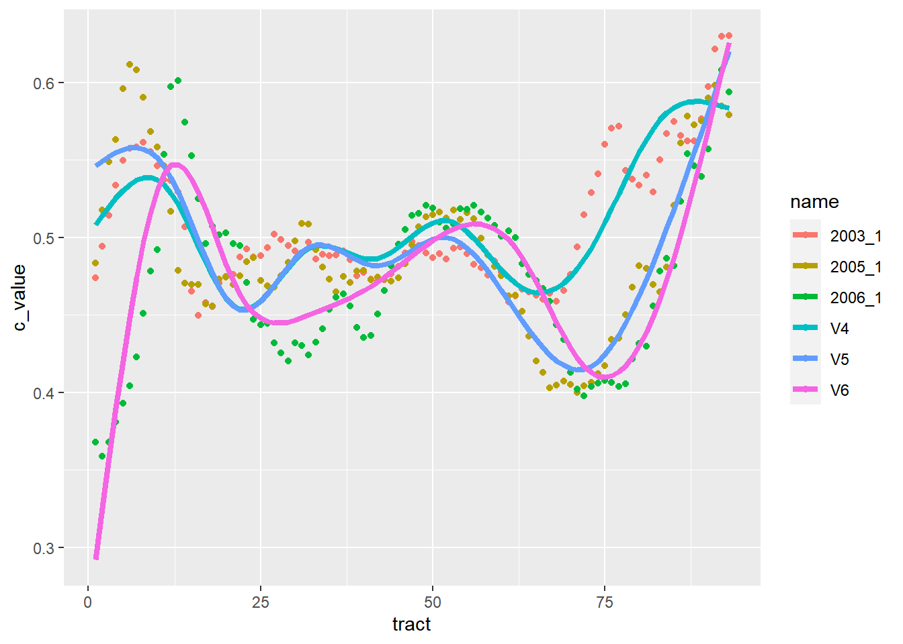
1.5 Funções já incorporadas disponíveis no R.
Existem várias funções em R que implementam o método fPCA para dados densamente observados (com/sem ruído):
fpca.face,fpca.ssvdefpca2sdo pacote “refund”.- Desenvolvidas especificamente para dados funcionais densos.
- Não são aplicáveis a dados funcionais esparsos.
fpca.ssvdefpca2sexigem a especificação do número de componentes principais (npc); não é possível selecionar o número de componentes principais com base na proporção da variância explicada (PVE, sigla em inglês).
tract <- 1:93
res.face <- fpca.face(Y = DTI$cca, argvals = tract, pve = 0.95)
names(res.face)[1] "Yhat" "Y" "scores" "mu" "efunctions"
[6] "evalues" "npc" efn.face <- res.face$efunctions*sqrt(93)
eval.face <- res.face$evalues/93
efn.face %>%
as_tibble() %>%
rownames_to_column(var = "tract") %>%
mutate(
tract = as.numeric(tract)
) %>%
dplyr::select(1:6) %>%
pivot_longer(cols = starts_with("V")) %>%
group_by(tract) %>%
ggplot(aes(tract, value, group = name, color = name))+
geom_line()+
labs(x="tract", y="", title = "5 primeiras autofunções")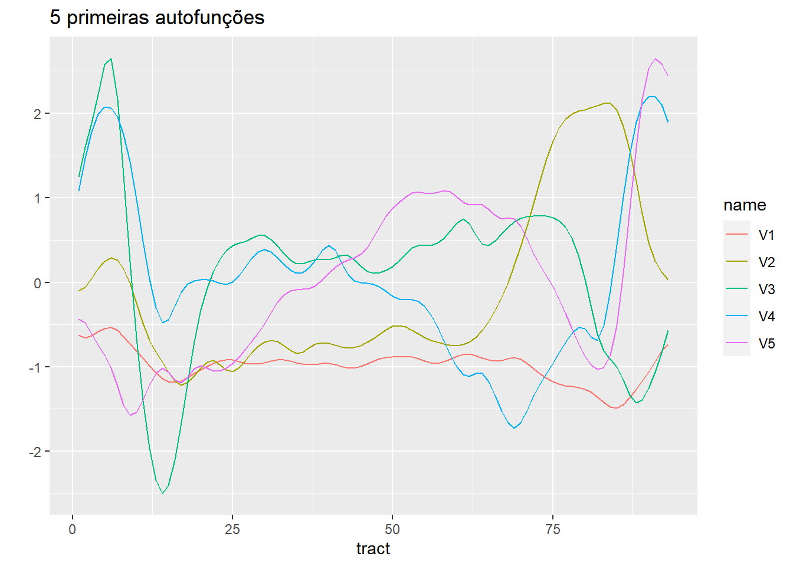
k.pc <- 1
mu.hat <- res.face$mu
effect <- efn.face[,k.pc] * 2* sqrt(eval.face[k.pc])
pve.face <- (cumsum(eval.face)/sum(eval.face))
pc1_plot <- cbind(tract, efn.face[,k.pc]) %>%
as_tibble()
pc1_plot %>%
ggplot(aes(tract, V2))+
geom_line()+
ylim(c(-2,2))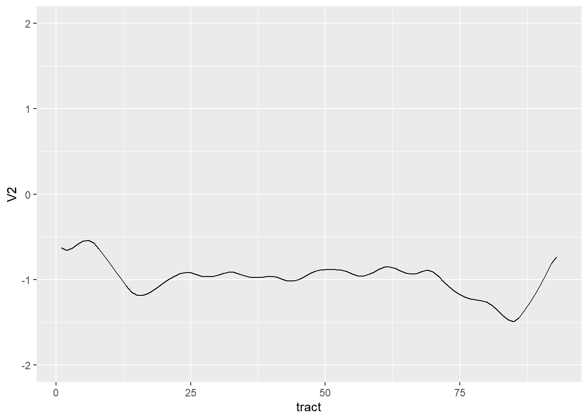
mu.hat %>%
as_tibble_col(column_name = "mu.hat") %>%
mutate(
effect_Plus = mu.hat + effect,
effect_less = mu.hat - effect,
tract = tract
) %>%
pivot_longer(cols = 1:3) %>%
group_by(tract) %>%
ggplot(aes(tract, value, group = name, color = name))+
geom_line()+
ggtitle(glue::glue("fPC", k.pc,"(", round(pve.face[k.pc]*100) ,"%)"))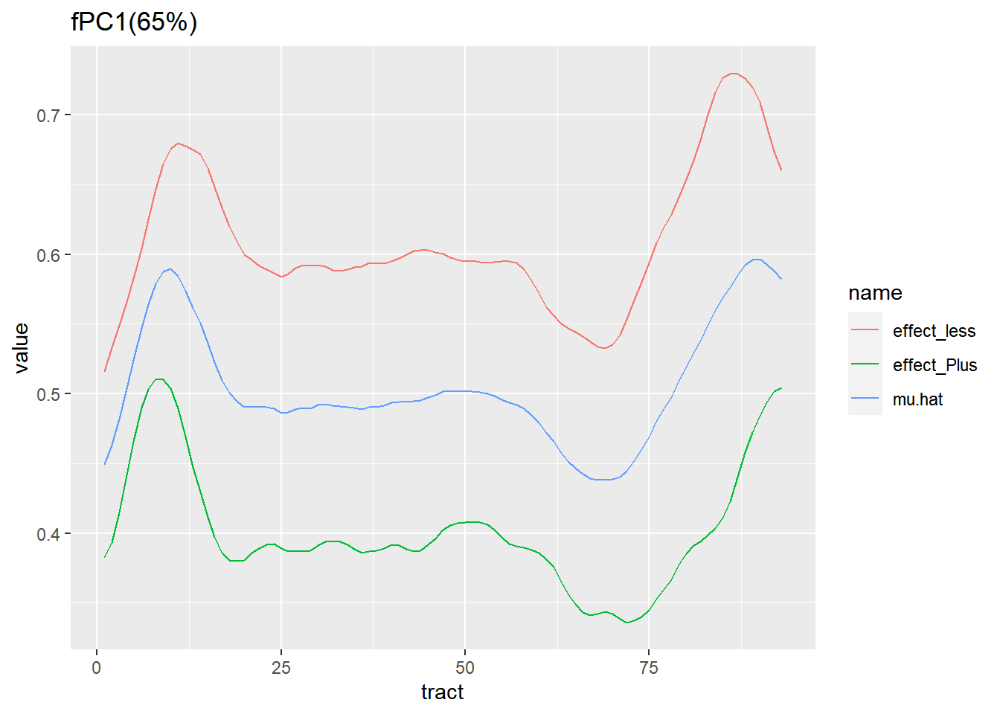
yhat_smooth <- res.face$Yhat %>%
t() %>%
as_tibble() %>%
dplyr::select(1:3) %>%
pivot_longer(cols = contains("_1")) %>%
rownames_to_column(var = "tract") %>%
mutate(
tract = as.numeric(tract)
) %>%
dplyr::select(-name)
DTI$cca %>%
t() %>%
as_tibble() %>%
dplyr::select(1:3) %>%
pivot_longer(cols = contains("_1")) %>%
rownames_to_column(var = "tract") %>%
mutate(
tract = as.numeric(tract)
) %>%
left_join(yhat_smooth, by = "tract") %>%
ggplot(aes(tract, value.x, group = name, color = name))+
geom_point(alpha = 0.7)+
geom_line(aes(tract,value.y), linetype = 1, linewidth = 1.5)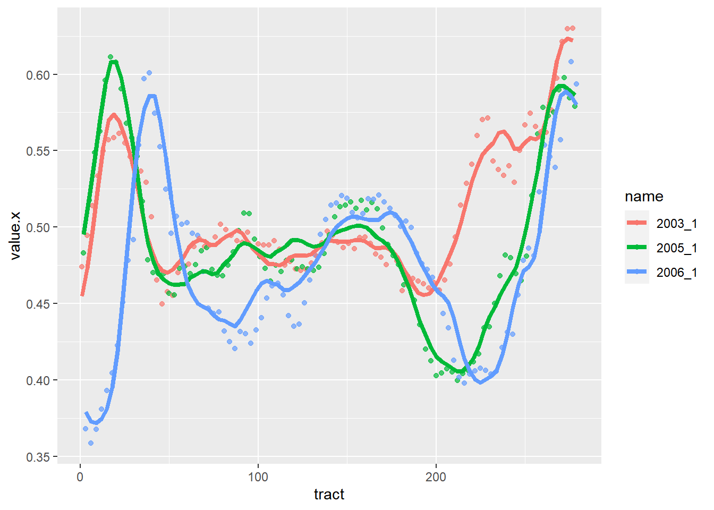
Para usar as funções fpca.ssvd e fpca2s, confira os seguintes códigos de exemplo:
res.ssvd <- fpca.ssvd(Y = DTI.baseline$cca, npc = 5)res.2s <- fpca2s(Y = DTI.baseline$cca, npc = 5, argvals = tract)
Sempre verifique se os eigencomponentes e escores resultantes estão corretamente escalados!
2 fPCA para dados ruidosos e esparsos.
Quando queremos realizar a FPCA em dados funcionais esparsos e ruidosos, como o conjunto de dados de contagem de CD4…
data(cd4)
cd4_tidy <- cd4 %>%
as_tibble() %>%
rowid_to_column(var = "affected") %>%
pivot_longer(cols = 2:62, names_to = "months", values_to = "count-mm" ) %>%
mutate(
months = as.numeric(months)
)
cd4_tidy %>%
group_by(affected, months) %>%
drop_na() %>%
ggplot(aes(months, `count-mm`, group = affected))+
geom_line(color = "grey")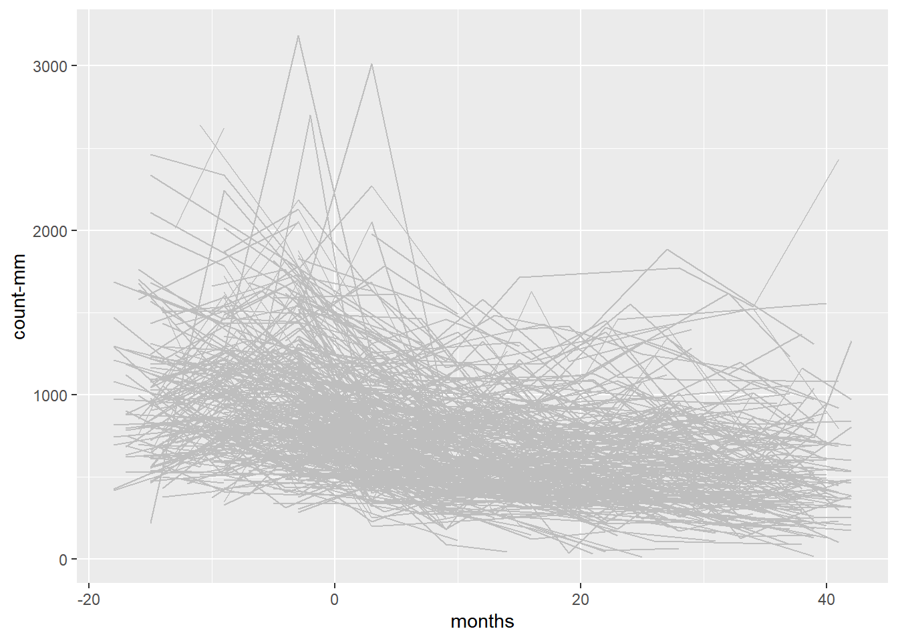
set.seed(123)
sampled <- sample(cd4_tidy$affected, size = 5, replace = FALSE)
cd4_tidy %>%
filter(affected %in% sampled) %>%
mutate(
affected = as_factor(affected)
) %>%
group_by(affected, months) %>%
drop_na() %>%
ggplot(aes(months, `count-mm`, group = affected, color = affected))+
geom_line()+
geom_point()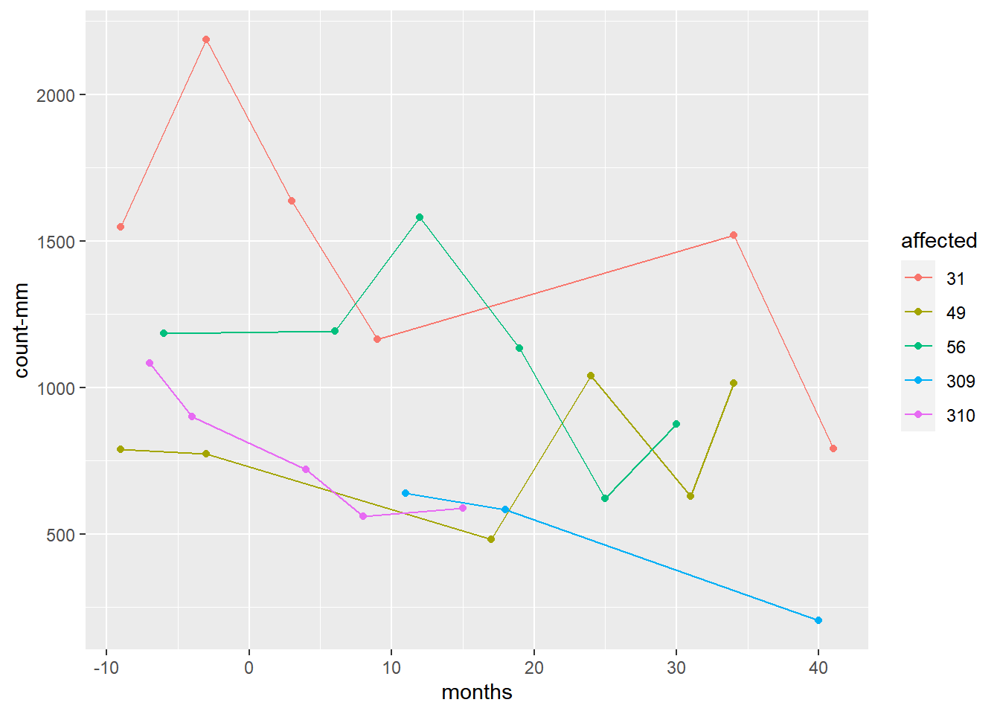
2.1 Análise de FPCA nos dados de contagem de células CD4.
Estimativa da média através da combinação dos dados
Devido ao fato de haver apenas algumas medições repetidas da contagem de células CD4 de cada sujeito, as duas abordagens para estimar a função média (e covariância) para dados funcionais densos não são apropriadas. Portanto, a abordagem comum para dados funcionais esparsos é combinar todas as medições.
Por exemplo, para estimar a função média,
n <- nrow(cd4)
month <- as.numeric(colnames(cd4)) # months -18 and 42 since seroconversion
m <- ncol(cd4)
library(mgcv)
# use all measurements
dat.vec <- data.frame(na.omit(cbind(rep(1:n, each = length(month)),
rep(month, n), as.vector(t(cd4)))))
colnames(dat.vec) <- c("id", "t","y")
fit <- gam(y ~ s(t, k = 10, bs = "cr"),
method="REML", data = dat.vec)
mean.hat <- predict(fit, newdata = data.frame("t" = month))
meand_df <- cbind(months = unique(cd4_tidy$months), mean.hat) %>%
as_tibble()
meand_df %>%
ggplot(aes(months, mean.hat))+
geom_line()+
ylim(c(0,3000))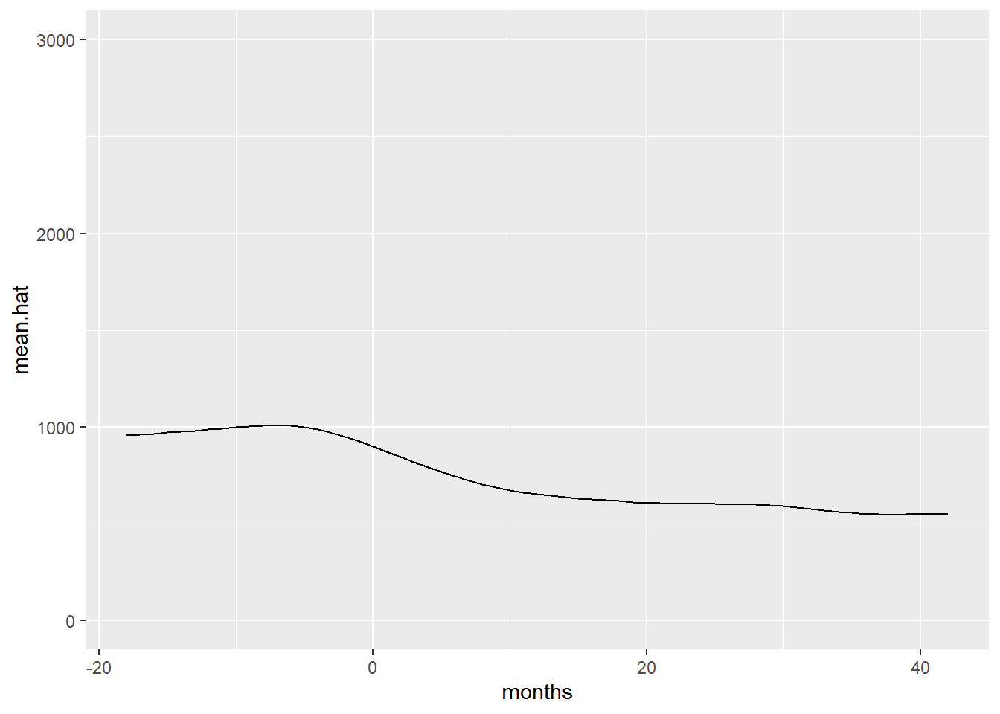
Da mesma forma, podemos estimar a função de covariância combinando todas as medições.
2.2 FPCA usando funções incorporadas
Existem vários softwares que já foram desenvolvidos para implementar o FPCA para dados funcionais esparsos e ruidosos.
- A função
fpca.scno pacote refund (documentação) - A função
face.sparseno pacote face (documentação) - A função
fpca.mleno pacote fpca (documentação) - O pacote PACE (escrito em MATLAB) (página da web)
A seguir, é apresentada uma ilustração de FPCA na contagem de células CD4 usando a função fpca.sc.
fpca.res <- fpca.sc(cd4, argvals = month, pve = 0.95, var = TRUE)
#colSums(fpca.res$efunctions^2)
m <- length(month)
efns <- fpca.res$efunctions*sqrt(m)
evals <- fpca.res$evalues/m
efns %>%
as_tibble() %>%
mutate(
months = unique(cd4_tidy$months)
) %>%
pivot_longer(cols = starts_with("V")) %>%
ggplot(aes(months, value, group = name, color = name))+
geom_line()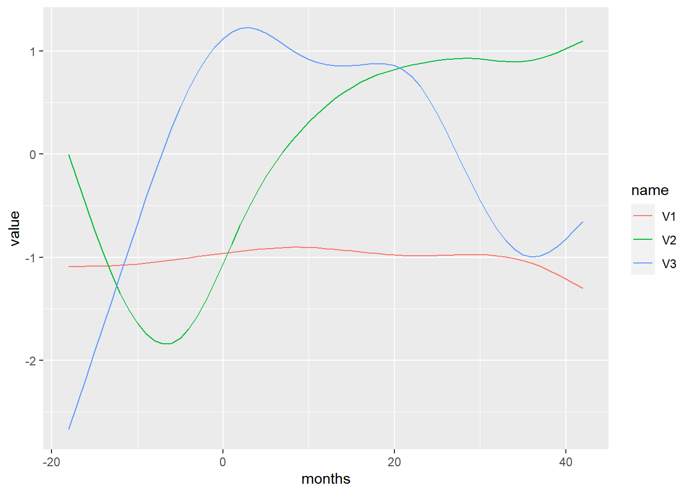
#
k.pc <- 2
mean.hat <- fpca.res$mu
effect <- 2*sqrt(evals[k.pc])*efns[,k.pc]
cbind(mean.hat = mean.hat, effect = effect) %>%
as_tibble() %>%
mutate(
upper_bound = mean.hat + effect,
lower_bound = mean.hat - effect,
months = unique(cd4_tidy$months)
) %>%
pivot_longer(cols = c(mean.hat,lower_bound,upper_bound)) %>%
ggplot(aes(months, value, group = name, color = name))+
geom_line()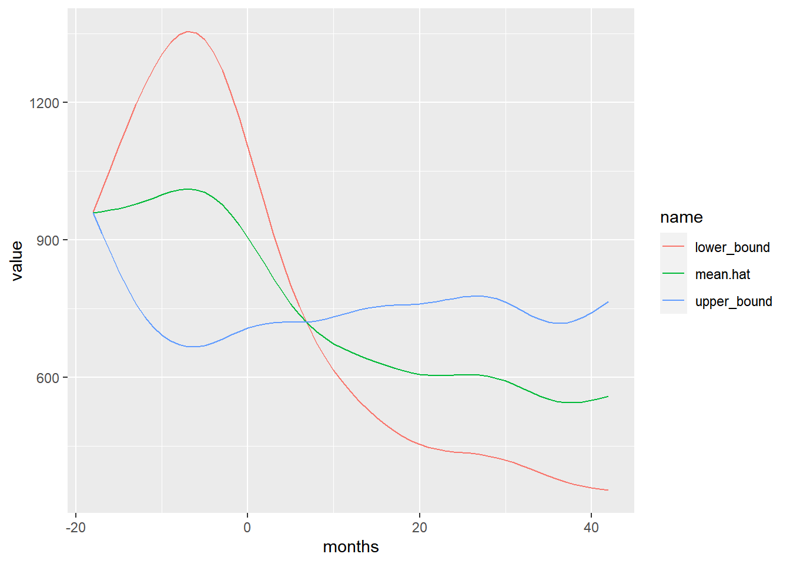
(Atividade em grupo) Discuta e interprete os resultados da FPCA. Quantos CPs são necessários para explicar 95% das variabilidades nos dados? Que características das curvas subjacentes foram capturadas por esses CPs?
Usando as eigenfunções e escores estimados, também podemos reconstruir as curvas verdadeiras específicas do sujeito. As curvas ajustadas podem ser obtidas a partir dos resultados do fpca.sc, mas para fins de ilustração…
#isso vem das linhas 521 e 522, onde foram calculadas as componentes
pve <- cumsum(evals)/sum(evals)
npc <- sum(pve < 0.95) + 1
# truncated estimated eigen components
efns <- efns[,1:npc]
evals <- evals[1:npc]
pve[1:3] %>% #
t() %>%
as_tibble() %>%
pivot_longer(cols = starts_with("V")) %>%
mutate(
n_pcs = 1:3
) %>%
ggplot(aes(n_pcs,value))+
geom_line()+
geom_point()+
geom_hline(yintercept = 0.95, color = "red", linetype = 2)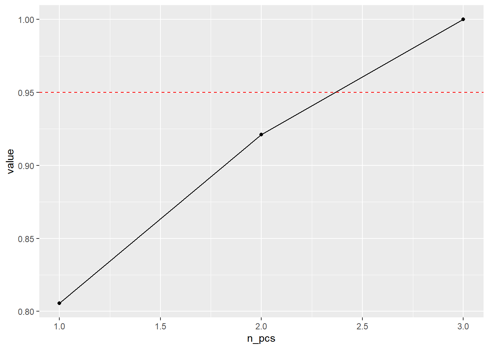
#
fpca.res$Yhat %>%
t() %>%
as_tibble() %>%
mutate(
month = unique(cd4_tidy$months)
) %>%
pivot_longer(cols = starts_with("V")) %>%
group_by(month) %>%
mutate(
avg = mean(value)
) %>%
group_by(month) %>%
ggplot(aes(month, value, group = name, color = name))+
geom_line()+
theme(legend.position = "none")+
geom_line(aes(month, avg), color = "red", linewidth = 1, linetype = 2)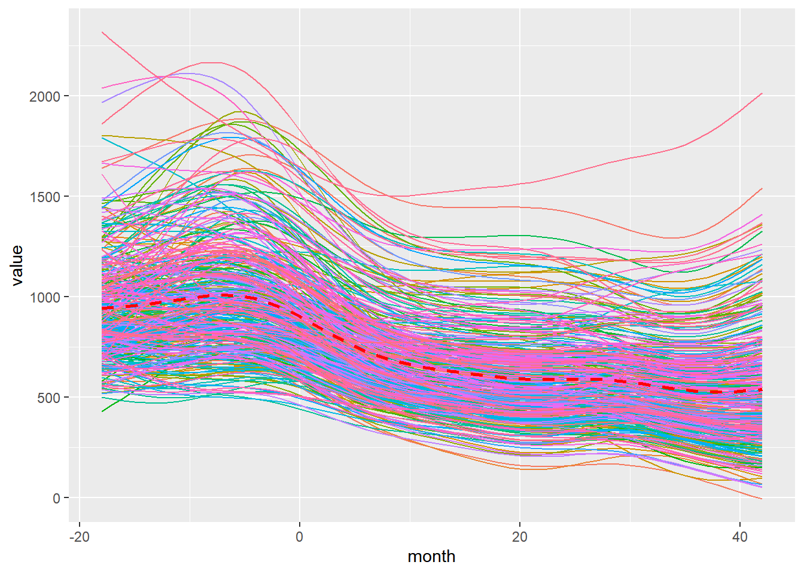
#
fpca.res$Yhat %>%
t() %>%
as_tibble() %>%
mutate(
month = unique(cd4_tidy$months)
) %>%
pivot_longer(cols = starts_with("V")) %>%
group_by(month) %>%
mutate(
avg = mean(value)
) %>%
group_by(month) %>%
dplyr::filter(name %in% c("V1","V42", "V7", "V28")) %>%
ggplot(aes(month, value, group = name, color = name))+
geom_line()+
theme(legend.position = "none")+
geom_line(aes(month, avg), color = "red", linewidth = 1, linetype = 2)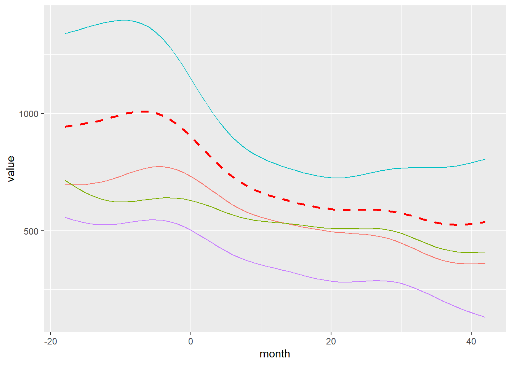
3 Visualização usando o pacote refund.shiny.
A função principal no pacote refund.shiny é a função plot_shiny, que retorna gráficos interativos dos resultados de várias análises de dados funcionais:
- FPCA (dia 3)
- Regressão função-em-escalar (dia 4)
- FPCA variante no tempo (dia 5)
data(cd4)A função plot_shiny recebe a saída de qualquer uma das funções de FPCA no pacote refund, ou seja, fpca.sc, fpca.face, fpca.ssvd e fpca2s.
fpca.res <- fpca.sc(cd4, pve = 0.95, var = TRUE)
plot_shiny(fpca.res)
Isso retorna cinco abas com gráficos interativos:
Aba 1: média +/- CPs
Aba 2: gráfico de “scree”
Aba 3: combinações lineares
Aba 4: ajustes por sujeito
Aba 5: gráfico de dispersão de escores
(Atividade em grupo) Explore os gráficos interativos.
4 Resumo
- Discutiu-se a estimativa de média e covariância para FD denso.
- Interpretou-se os resultados da fPCA.
- Exploraram-se gráficos interativos do plot_shiny.
Atividades em grupo / para casa:
Analisar os dados da Maratona (atividade em grupo)
(duas respostas: tempo decorrido com transformação logarítmica e tempo por milha)
Plotar / descrever os dados.
Plotar / discutir as funções estimadas de média e covariância.
Utilizar gráficos interativos para explorar os resultados da fPCA e resumir suas descobertas.
Analisar os dados de Poluentes (atividade para casa)
(enfoque no nível de sulfato com transformação logarítmica)
Plotar / descrever os dados.
Plotar / discutir as funções estimadas de média e covariância.
Utilizar gráficos interativos para explorar os resultados da fPCA e resumir suas descobertas.